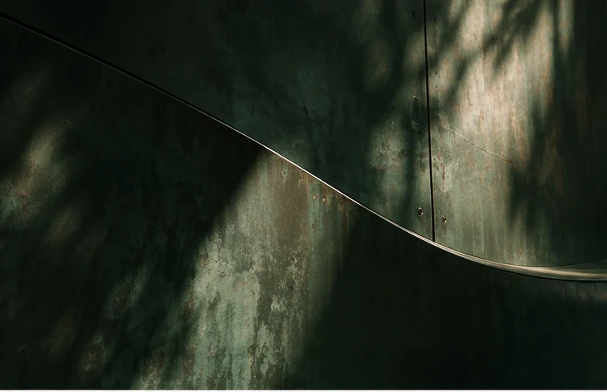
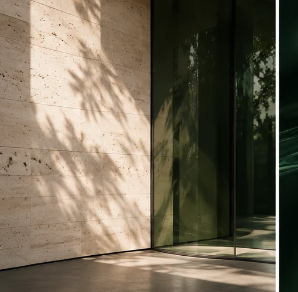
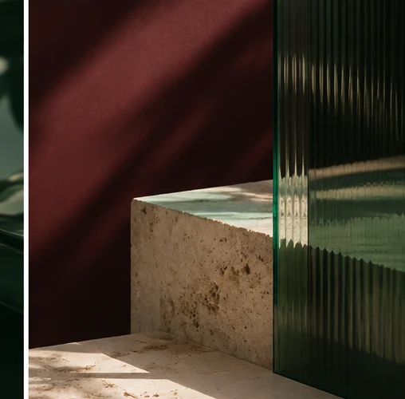

Линия
Тактильность как идея
Мебель и предметы, которые меняют пространство не количеством, а характером.
Смотреть объекты

Тактильность как идея

Форма и равновесие

Спокойная геометрия
Мы ищем форму, которая останется уместной и завтра.
Мы работаем с пространством через свет, пропорции и честные материалы. У каждого предмета есть идея, а у каждой детали — причина быть на своём месте.
Коллекция создана как исследование спокойного, внимательного дизайна. Здесь нет случайных элементов: только форма, фактура и движение света.
Тихая сила фактуры
Игра теней и оттенков
Баланс и воздух